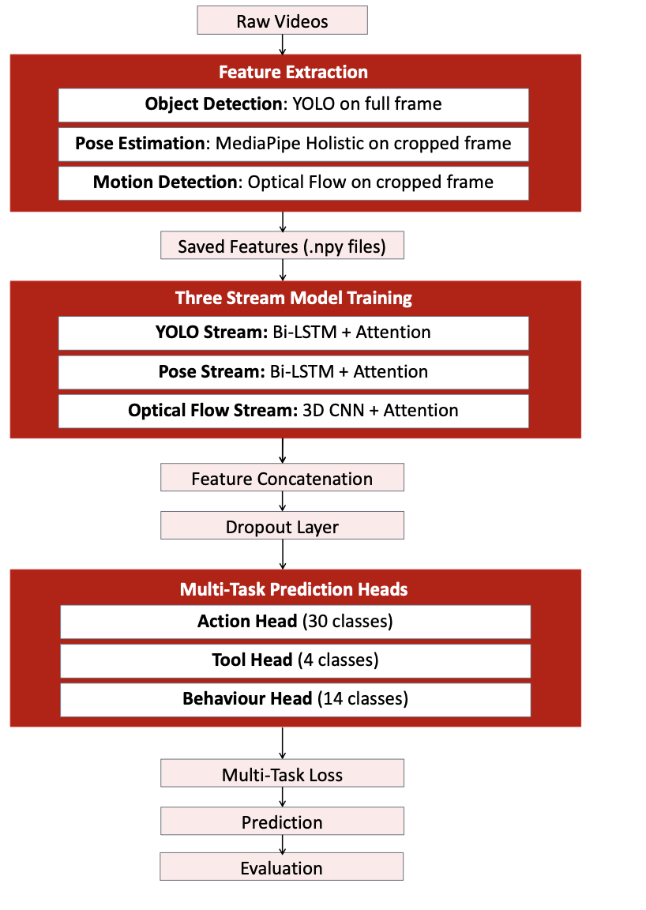
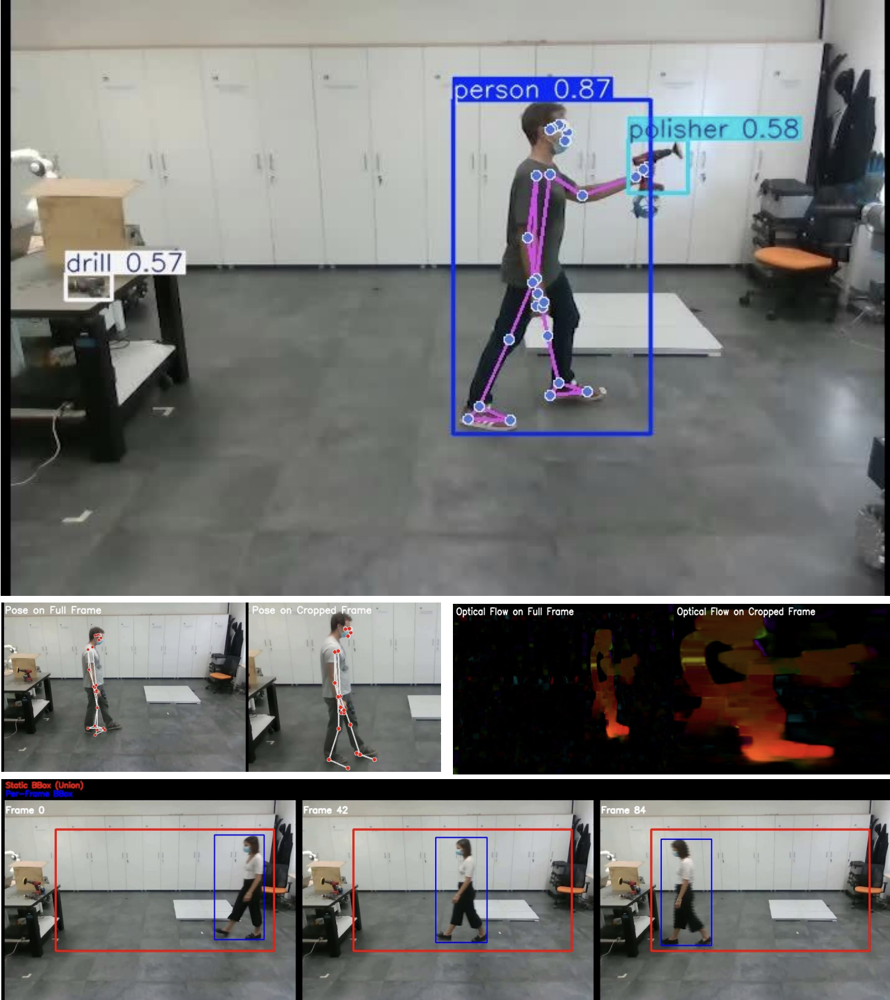

Human Action Classifier

Three-Stream Model Architecture

Multi-Phase Development Approach
Multi-Modal Action Recognition for Human-Robot Collaboration
Academic
Winner - 2025 Sensing & Perception Challenge at King's College London
Human-robot collaboration requires reliable real-time understanding of human behaviour. Confusing actions such as moving forward vs. moving diagonally with a tool can directly affect safety and workflow. The HRI30 dataset highlights this challenge through 30 industrial actions that differ subtly in motion and tool use.
This project leverages multiple visual modalities - object detection, human pose, and motion dynamics - to achieve reliable action recognition in complex industrial environments. The solution uses a three-stream architecture combining:
- Object Detection: Custom YOLOv8 fine-tuned on 100 labeled images for person, drill, polisher, and object detection (24-dim vector per frame)
- Pose Estimation: MediaPipe Holistic extracting 33 body landmarks across 32 sampled frames (66-dim vector per frame)
- Optical Flow: Dense optical flow with 5x5 grid aggregation for movement direction and magnitude (50-dim vector per frame)
The model uses Bi-LSTM + Attention for YOLO and Pose streams, 3D CNN + Attention for Optical Flow, with multi-task prediction heads for action (30 classes), tool (4 classes), and behaviour (14 classes). Actor-centric cropping improved accuracy by ~4% by focusing features on the actor and eliminating background noise.
Results: Train Accuracy: 96.72% | Validation Accuracy: 97.14% | Test Accuracy: 84.62%
Skills
- Deep Learning (PyTorch)
- Computer Vision
- YOLOv8 Object Detection
- Pose Estimation (MediaPipe)
- Optical Flow Analysis
- Bi-LSTM / 3D CNN Architectures
- Multi-Task Learning